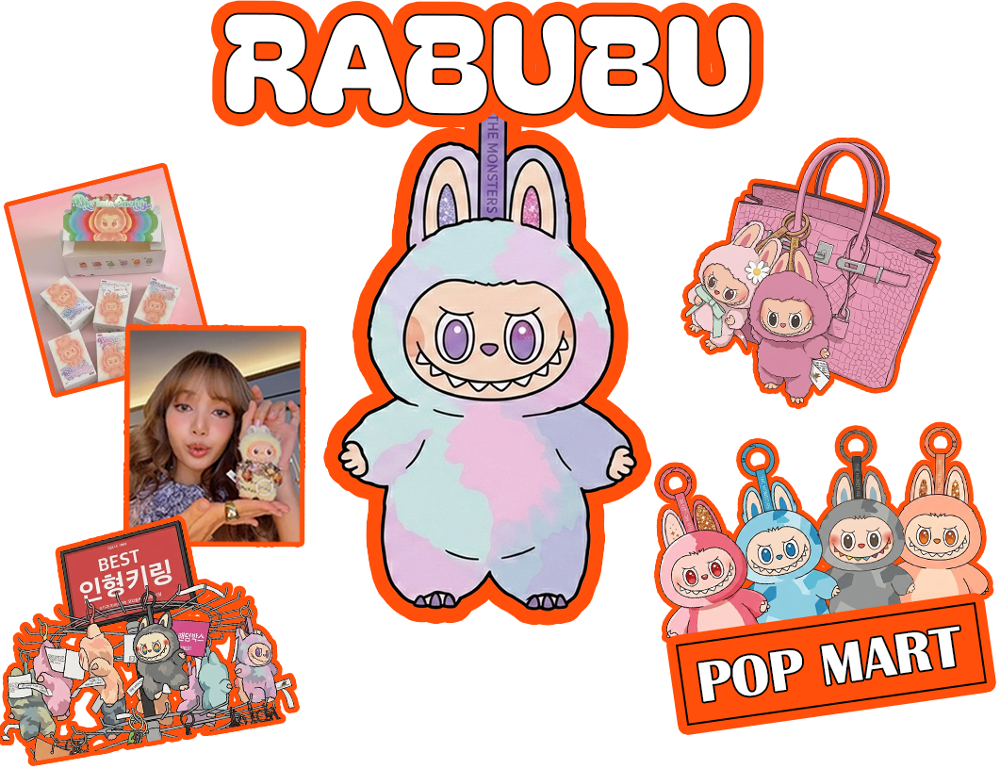

라부부는 글로벌 대표 아트 토이 브랜드 팝마트(POP MART)에서 선보인 캐릭터로, 길쭉한 귀와 뾰족한 상어 이빨, 그리고 장난기 가득한 표정이 특징인 괴물 요정 캐릭터다.
라부부 인형은 랜덤박스 형태의 판매 방식에으로 소비자는 상자를 열기 전까지 어떤 디자인의 인형이
들어있는지 알 수 없다. 자신이 원하는 특정 컬러나 컨셉의 캐릭터를 단번에 얻기 힘들다는 점이 오히려 소비자들의 도전 정신과 수집욕을 자극한다.
상자 내부에는 극악의 확률로 등장하는 ‘시크릿(희귀) 인형’이 숨겨져 있어, 이를 뽑기 위해 같은 제품을 수십 개씩 중복 구매하며 원하는 제품을 손에 넣었을 때 느끼는 도파민과 성취감이 단순한 물건 구매
이상의 가치를 제공하는 것이다.
전 세계적인 품귀 현상의 기폭제가 된 것은 블랙핑크의 멤버 리사(Lisa)의 SNS 게시물이었다.
평소 라부부의 열혈 팬으로 알려진 리사가 자신의 가방에 라부부 키링을 달고 있는 사진과 인형을 품에 안고 있는 일상 사진을 인스타그램에 업로드하자, 해당 제품은 순식간에 글로벌 트렌드로 급부상했다.
그로인해 제조 공장이 위치한 중국을 중심으로는 육안으로 구별하기 힘든 정교한 가짜 제품(가품)이
대량으로 유통되어 전 세계로 흘러 나갔다. 이는 소비자들의 피해로 이어졌을 뿐만 아니라,
팝마트 측의 대대적인 단속과 법적 소송으로 까지 이어졌다.